1940’s The Beginning
March 1947
- 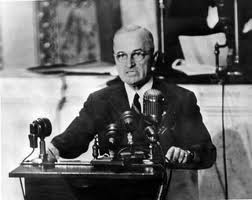
The Truman Doctrine: President Truman’s declaration that the United States would provide aid to any nation for the purpose of resisting Communist aggression; congress granted his request for $400 million to support Greece and Turkey in their attempts to remain free from Communist rule. Eventually this developed into the containment policy, which was designed to suppress the spread of communism. (Confrontational)
May 14, 1948
- Israel is Created: following a UN General Assembly decision to divide what was then Palestine into an Arab state and separate Jewish state, which Palestine had rejected; especially since during and after the 1800’s Europe had experience a Zionist movement into the region. On May 15 Arab armies from Egypt, Syria, Lebanon, Iraq, and Transjordan attacked the new nation with the intent to destroy. Eventually, Israel gained back about half the land planned, while Egypt and Jordan the other. Jerusalem experienced similar division, Israel controlling the western half and Jordan the eastern half. Thousands of Arabs moved from Israel controlled areas to become refugees in Arab controlled regions. (Confrontational)
- 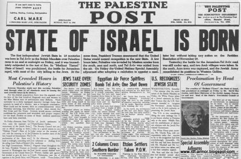
1949
- 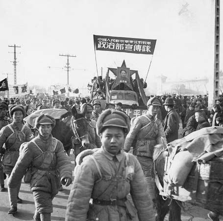
- Communists Conquer China: Mao manages to drive out the Chinese Nationalist government and its American aid; Unites States policy in East Asia failed and the new government declares the United States “China’s main enemy” while negotiating military alliance and military cooperation with the U.S.S.R. (Confrontational)
1950’s Defining the Positions
June 25, 1950
The Korean War Begins: after World War II, the previously Japanese controlled territory on the Korean peninsula was divided, by the 38th parallel, into a Soviet administered region in the north and an American administer region in the south. On June 25 the northern communist troops invaded South Korea, which was deplored by the United Nations as a violation of international peace and therefore demanded the Communist withdraw. UN troops were sent in to aid the South because the U.S.S.R. was boycotting the Security Council and failed to veto the action. Then Soviet tanks were provided and Chinese soldiers as support for the North. (Confrontational)
- 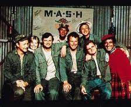
July 26, 1956
- 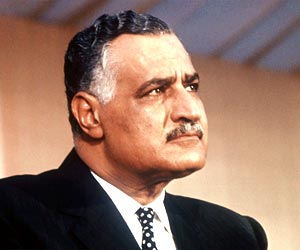
Suez Crisis: President Gamal Abdel Nasser nationalized the Suez Canal Company in response to Britain (and America) abruptly withdrawing their offer to fund the Aswan High Dam; in response Israel, France and the U.K. launched and attack on Egypt in October. The Soviet Union threatened armed intervention and the United Sates foresaw a nuclear confrontation, both of which lead to a cease fire by November 6; proved the United States and U.S.S.R. to be the leading political powers in politics. (Confrontational)
February 16, 1959
- 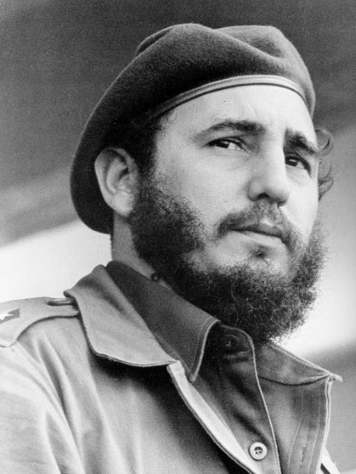
Fidel Castro becomes the leader of Cuba: after overthrowing Batista and his government, Castro took control of American owned sugar estates, 40% of the industry, which strained relations between the two nations. Castro wanted to decrease American influence on Cuban national issues, thus he developed stronger ties with the U.S.S.R., signing a trade agreement with them in 1960. (Confrontational)
Self-DeterminationThe idea that a nation has the right to its own sovereignty, and the ability to construct individual policies that affect their own nation without outside influence. Self-determination was assaulted throughout the Cold War as nations were attacked, sanctioned and discriminated against because of their political ideology, rather than any particular action or inaction the nation underwent.
1960’s Pushing the Boundaries
May 1, 1960
U-2: Francis Gary Powers, the pilot of an American U-2B reconnaissance plane, was shot down over the U.S.S.R. by a surface-to-air missile days before a scheduled meeting between President Eisenhower and Chairman Khrushchev. Previous to the incident, the United States had denied that it had any planes spying on the U.S.S.R. and only admitted when the Soviets produced the pilot and parts of the aircraft. America ceased direct over flights of the Soviet Union after this incident. On February 10 1962 powers was released as part of a prisoner exchange. (Confrontational)
- 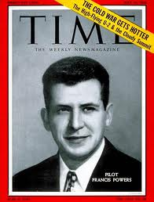
October 1962

Cuban Missile Crisis: the Soviet Union secretly installed missiles in Cuba, 90 miles off the coast of Florida, which the USA discovered on a reconnaissance flight over Cuba on October 16. President Kennedy insisted they be removed, and on October 22 order a naval quarantine of Cuba. The States planned an invasion of Cuba for October 29 or 30. At first the USSR offered to remove the missiles on the condition that US not invade Cuba, after they changed the conditions to the removal of American military bases in Turkey. Publically Kennedy agreed remove American military bases from Turkey in exchange for the Soviet Union taking back the Cuban missiles; he also privately agreed to the condition that the United States would never invade Cuba. (Confrontational)
1968
Prague Spring: a reform movement pushed forward by communist party leader Alexander Dubcek that allowed greater freedom of the press, greater freedom in certain sectors of industry, and allowed the formation of other political parties. In response Soviet and Warsaw pact members sent in 300,000 troops on August 20, detaining Dubcek and his government. Dubcek was then summoned t Moscow and told that his reforms would be rolled back and that Soviet troops would remain in Czechoslovakia. Prague Spring severed as a rallying point for reformers during the next 20 years; also resulted in the formation of the Brezhnev Doctrine. (Confrontational)
- 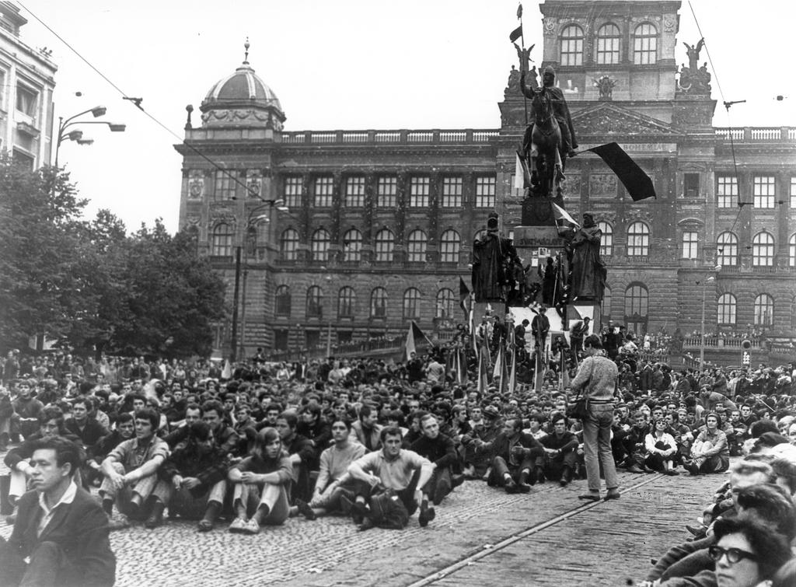
1970’s Concessions
October 25, 1971
- 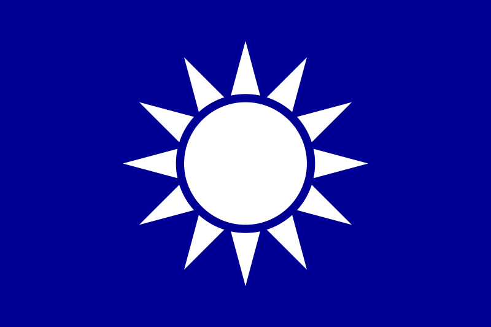
China is admitted to the United Nations: the General Assembly votes to recognize Communist China and expel nationalist China; the issue of Chinese membership was mentioned at every preceding General Assembly meeting from 1950 to 1971. (Cooperative)
Spheres of InfluenceThe area in which a particular entity has a political, economic, or military influence upon. This need not be geographic in nature and could potentially be social influence. Countries with treaties, trade agreements or similar ideologies can often have each other in their spheres of influence.
April 30, 1975
South Vietnam falls to North Vietnam: Congress rejected President Ford’s request for $300 million to aid Vietnam; this combined with a series of military defeats prompts the president of South Vietnam for resign and flee. His successor surrenders unconditionally to the North. American intervention had been justified by the theory that if the region became communist soon the neighboring countries would follow; this was proved invalid after the war. The United States was also left to inflation costs, from the war, for the next eight years. (Cooperative)
- 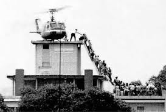
December 27, 1979
- 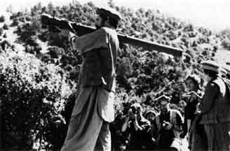
Soviets invade Afghanistan: a growing revolt again the new Soviet backed regime triggered the inflow of Soviet troops into the country. Previously the Afghan army along with 4000 Soviet “advisors” had fought with Muslim and Afghan rebels; at the end of the year an estimated 45,000 Russian troops were fighting in Afghanistan. The U.S.S.R. did not begin to withdraw troops until 1988. (Confrontational)
1980’s Decline
1985
Gorbachev becomes the leader of Soviet Union: he instigated sweeping political and economic reforms, called perestroika, and a new policy of openness, called glasnost. He improved foreign relation with both the United States and China, and allows some former allies to replace Communist governments with democratic governments. Soviet troops withdrew from Afghanistan under his command. (Cooperative)
Peaceful Co-ExistenceThe idea that both communist and capitalist entities and nations could exist simultaneously in a state of peace and prosperity. Khrushchev advocated for the idea of peaceful co-existence in the Soviet union in the period around 1956, when the threat of nuclear war was at an all-time high level.
- 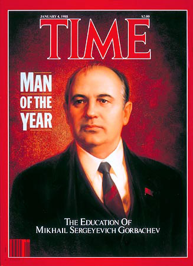
1989
- 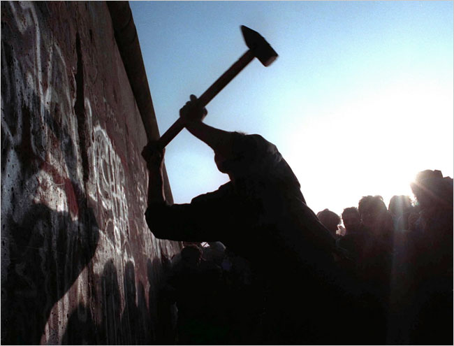
Berlin Wall comes down: symbolized the collapse of Eastern Europe’s Communist bloc. (Cooperative)
April 15, 1989
Tiananmen Square: Chinese students demonstrating against high inflation and for greater democracy occupied and area within the Forbidden City, Tiananmen Square, and attracted millions of supporters. On June 4, millions of people were killed when Chinese military fought their way in with the intention of crushing the movement.
- 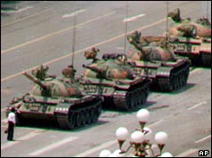
1990’s The End
December 25, 1991
Gorbachev resigns: the Soviet Union ceases to exist. (Cooperative)
DisarmamentA period marked by the disarming of weapons and dismantling of military forces, usually occurs in periods of detente, or post-war conditions when such large forces become superfluous and beyond the sustainable, peacetime level.
- 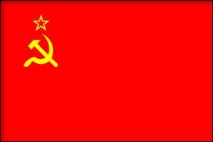
Gorbachev resigns: the Soviet Union ceases to exist. (Cooperative)
DisarmamentA period marked by the disarming of weapons and dismantling of military forces, usually occurs in periods of detente, or post-war conditions when such large forces become superfluous and beyond the sustainable, peacetime level.